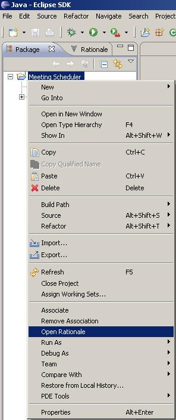
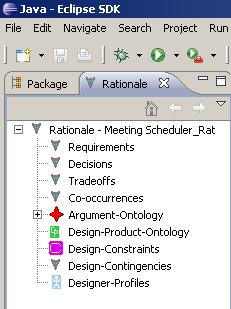

The SEURAT system also allows the user to associate entire Eclipse projects with rationale databases. In this way, the rationale describing a software project can be tied to the project itself. By default, the SEURAT rationale database associated with a particular project has the same name but with "_Rat" appended at the end (e.g. the project named "Meeting Scheduler" has the rationale database "Meeting Scheduler_Rat" associated with it).
To open the rationale database that is associated with an Eclipse project, right-click on the Eclipse project and click on "Open Rationale." If the rationale database exists, it will be loaded when the user switches to the Rationale Explorer view. If the rationale database does not exist, an empty rationale database will automatically be created. See the following figures:

Once "Open Rationale" has been selected, switch to the Rationale Explorer to access the associated database. In this example SEURAT has created a new database to associate with the project.

Please note: The "Open Rationale" operation uses the database settings that have been specified in the SEURAT Preference Pages to find the database. If, for example, you have a project associated with a rationale database that uses MySQL, and the SEURAT preferences are currently set to use Derby, you will have to change the preference settings before selecting "Open Rationale," or SEURAT will not find the associated database and will simply create a new Derby database to associate with the project.